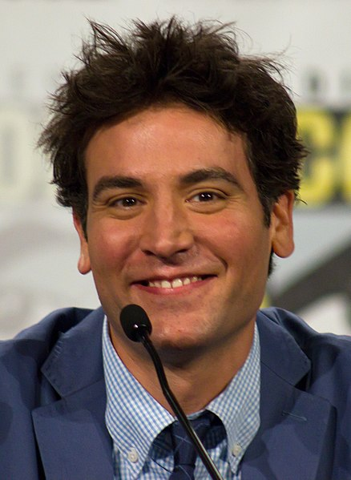

Josh Radnor è un attore, regista e scrittore statunitense nato il 29 luglio 1974. È diventato famoso per il suo ruolo da protagonista nella popolare sitcom "How I Met Your Mother", dove interpretava Ted Mosby. Oltre alla recitazione, Radnor ha anche diretto e scritto diversi film, tra cui "Liberal Arts" e "Happythankyoumoreplease". Ha una formazione accademica solida, con lauree in arti performative e drammaturgia. La sua carriera comprende una varietà di progetti artistici e continua a essere coinvolto in diverse discipline creative.
«Looo... conosci Ted?» -Barney Stinson